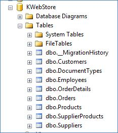
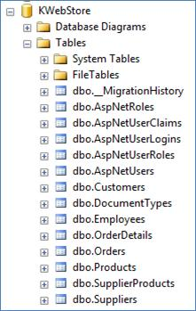

Part 23.
Para
conectarse a Facebook ingresar al
archivo : Startup.Auth.cs
Ingresar a
facebook developers
https://developers.facebook.com/
Iniciar session.
Ingresar teléfono y enviar como mensaje , aparece un código de confirmación en el telefono
Aplicacion : daytona-zmarket
Categoría
de la aplicación: Educación.
Ir a
configuración -> básica. Presione e :
Agregar Plataforma y guardar los cambios.
Presionar
en inicio rápido :
Presionar
en siguiente:
En Google o
GMail. Ingresar a : https://console.developers.google.com
Ir a
credenciales. -> Seleccionar ID de cliente de Outh
Configurar
pantalla de consentimiento.
En
programación no es bueno tener datos configurados ó quemados en la aplicación como datos de
usuario , JAMAS tener datos de configuración quemados. Es mejor que quede
dinámico.
Crear
Opción para agregar roles a usuarios.
En
ModelView crear las clases UserView y RoleView.
Crear en la
carpeta Controller el Control UsersController.
Y su vista Index.
Ingresar
controlador vacio.
Crear
usuario en la Aplicación:
Ingresar a
Register.
Ingresar
correo usuario y password. Y aparece
nuevas tablas relacionadas con el usuario.
Para Probar
entrar a Log in:
Usar
[Authorize] , para usar opciones solamente si esta logueado.
Los [Authorize]
se coloca ne l Get y No en el Post . Porque el GET es la entrada y no podran
salir en el POST:
Se puede
hacer en Edit y Delete.
Uso de
[AllowAnonymous] , [Authorize (Users =
"mimail@ul.com")] .
Para crear los roles usar :
ApplicationDbContext db = new ApplicationDbContext();
Los Roles debe aparecer en la tabla . [dbo].[AspNetRoles].
Crear usuarios con rol de administrador automáticamente ó rol de proveedor automáticamente.
Para crear usuarios por codigo: CreateSuperUser() .
Part 37
cache:
false
Para no
poner en cache los parámetros sino que
cada vez que llama por medio de ajax los refresque ó los limpie.
Part 23
13:23 Crear Permisos.
14:00
Explicación de usuario anonimo, debe ser
para ver los productos, publicidad.
16:00
. 16:30 Autorizar
Usuarios . Solamente al GET. Asi tampoco puede entrar al POST.
Usuario:
captain@siberia.zar
Passwd
Kataro300&
Nuevas
Tablas :


Para que
sea visible en todas las opciones de Products: A nivel de Controlador
Solo en
acciones como crear Producto, Edit y Delete. Solo Get y no Post. A nivel de accion
Permitir
anonimos.
Part 24
04:50 No debe haber un usuario quemado en la
aplicación.
Autorize con prametros : Separados por comas.
[Authorize(Users
= "captain@siberia.zar")]
.En
Global.asax.cs para conectarse al abase de datos :
KWebStoreContext
db = new KWebStoreContext();
6:40 Creación de Roles.
7:50 Creación automatica de metodos. Ubicarse y
(Ctrl punto ; Ctrl Space)
Role Manager
<IdentityRole> . Usar Libreria:
Microsoft.AspNet.Identity.
11:30
Creacion de Role "View"
13:50 Error al crear los roles en la base de
datos.
Usar :
AplicationDbContext(). Ahi estan las
tablas de seguridad.
17:45 AplicationDbContext(). Ahi estan las tablas de seguridad.
18:33 Ver
los roles creados en la tabla : AspNetRoles
18:45 Crear SUperUsuario de la aplicación por
codigo. Y a ese superusuario asignar los
4 roles.
Part 25
02:00 Crear SUperUsuario de la aplicación por
codigo. Y a ese superusuario asignar los
4 roles.
03:00 Crear
Super User
13:40
Autorizacion Por Roles
14:25
Autorizar lista de Roles separados por coma :
[Authorize(Roles =
"view")]
public ActionResult Index()
PART 26
00:40
Opciones de usuario en .NET 2012
01:40 Tablas
mas utilizadas : AspNetRoles y AspNetUserRoles ( Que es un puente entre las
tablas Users y Roles por ser relacion muchos a muchos ).
4:00
Explicación de como montar el esquema de
seguridad
5:15 Explicacion que al crear Customer
automaticamente crear usuario en el sistema.
Se crean
registros en la tabla : [AspNetUserRoles]
7:20
Crear modelo Virtual :
UserView y RoleView.
La clase UserView NO es un Usurio de Datos es un usuario de cara al
cliente.
Los modelos
son para mandarlos a la base o para manipularlos para una vista.
Por eso se
crea en la carpeta de ModelView los modelos de cara al cliente.
9:20
UserID y RoleID no es un entero es un
toquen.
13:00 En
UserView.cs RoleView Role , Se usa solo
para pintar los títulos de los roles en
la vista.
14:00 Crear
el controlador MVC5 Controller Empty :
UsersController
14:20 Crear la vista de index : public ActionResult
Index()
15:25
@Htm.lActionLink (Nombre que muestra, método a ejecutar, controlador)
El Error :
Error de compilación
Descripción: Error durante la
compilación de un recurso requerido para dar servicio a esta solicitud. Revise
los detalles de error específicos siguientes y modifique el código fuente en
consecuencia.
Mensaje de error
del compilador: CS0246: The type
or namespace name 'LoginViewModel' could not be found (are you missing a using
directive or an assembly reference?)
Error de código fuente:
|
Línea 35: Línea 36: Línea 37:
public class _Page_Views_Account_Login_cshtml : System.Web.Mvc.WebViewPage<LoginViewModel>
{ Línea 38: Línea 39: #line
hidden |
Archivo de origen: C:\Users\Navigator\AppData\Local\Temp\Temporary
ASP.NET
Files\root\46c82869\aa6d8bf0\App_Web_login.cshtml.5f83eb8c.7p7pnwrr.0.cs
Línea: 37
Solución : Cambiar en Login.cshtml
Debe ser :
@using KWebStore.ModelView
El Error :
{"C:\\Users\\Navigator\\AppData\\Local\\Temp\\Temporary
ASP.NET Files\\root\\46c82869\\aa6d8bf0\\App_Web__externalloginslistpartial.cshtml.5f83eb8c.ikfa-fch.0.cs(37):
error CS0234: The type or namespace name 'ExternalLoginListViewModel' does not
exist in the namespace 'KWebStore.Models' (are you missing an assembly reference?)"}
Solucion:
El archivo : _ExternalLoginsListPartial.cshtml
Cambiar :
@model KWebStore.Models.ExternalLoginListViewModel
Cambiar :
En :
KWebStore\KWebStore\Views\Account\_ExternalLoginsListPartial.cshtml
Debe Ser: @model KWebStore.ModelView.ExternalLoginListViewModel
Ahora se puede entrar al Login:
http://localhost:49242/UsersVw/Roles/d3047160-5c36-4d2b-9b6f-9c4a84ac5191
PART 27
2:00 Ctrl + . (Punto) Para importar. O Click Izq -> Resolve
2:40
Agregar Dispose. Esa conexion esta abierta mientras estemos en esa clase.
3:30 Si no
cierro las conexiones la aplicacion muere porque se llena el Pool.
7:20
userManager.Users.Tolist(). Obtiene una
lista de todos los usuarios.
15:40
Quitar la lista RolesView de la clase
UserView, no se necesita
PART 28
16:20 Crear
vista del archivo : UsersVwController.cs
accion : public ActionResult Roles(string userID)
PART 29
5:25 Probar.
PART 29
1:30 Verifica si user.Roles esta vacio.
2:00
Pendientes de que le manda la vista al controlador y que le devuelve el
controlador a la vista
3:10
Arregla error de id por userID en la
vista Index.
4:40
Explicacion mantener el codigo limpio de codigo que no se usa.
6:50
@html.ActionLink( "Add Role", "AddRole", new { user
= Model } )
@html.ActionLink( Titulo del enlace , Accion del controlador , Parametros (El Rol del Usuario) )
11:50 Probar
PARTE 30
02:35 Crear Acccion y Vista : AddRole
7:00 @using
( Html.BeginForm ( "AddRole" ,
"Users" , FormMethod.Post ) )
@using ( Html.BeginForm ( El Submit LLama a AddRole , Controlador Users , Ejecuta el Post ) )
08:00 Crea en la clase UserView la propiedad temporal: public RoleView Role . Para poner ahi el Rol que escogio pero no ha mandado a la lista de Roles.
09:30 @html.ActionLink(
"Return To User", "Roles",
new { userID = Model.userID } )
@html.ActionLink( Muestra en pantalla, Vista a mandar , Parametros (ID de usuario) )
11:00 Crear el ViewBag para el RolID
15:00 Probar Add Role.
PARTE 31
00:20 Crear post de AddRole , no solamente agregar HttpPost sino agregar otro parámetro para que sepan que son dos métodos diferentes. no se va a ocupar FormCollection.
[HttpPost]
public ActionResult AddRole(string
userID , FormCollection form)
9:05 Copiar código para crear UserView .
13:20 Pintar el Error en la vista AddRole.cshtml
15:20 La variable : userID. LLega vacia.
[HttpPost]
public ActionResult
AddRole(string userID , FormCollection form)
Arreglar Error de la vista AddRole.cshtml: Agregar parametro userID
@using (Html.BeginForm("AddRole", "Users", new {
userID = Model.UserID }, FormMethod.Post) )
PART 32
02:00 Probar Create Role.
El Error:
Error de compilación
Descripción: Error durante la
compilación de un recurso requerido para dar servicio a esta solicitud. Revise
los detalles de error específicos siguientes y modifique el código fuente en
consecuencia.
Mensaje de error
del compilador: CS0234: The type
or namespace name 'RegisterViewModel' does not exist in the namespace
'KWebStore.Models' (are you missing an assembly reference?)
Error de código fuente:
Archivo de origen: C:\Users\Navigator\AppData\Local\Temp\Temporary ASP.NET
Files\root\46c82869\aa6d8bf0\App_Web_register.cshtml.5f83eb8c.zt41gfub.0.cs
Línea: 31
Solución :
En el archivo : Views/Account/Register.cshtml.
Cambir : @model KWebStore.Models.RegisterViewModel
Por : @model KWebStore.ModelView.RegisterViewModel
Error :
Descripción: Excepción
no controlada al ejecutar la solicitud Web actual. Revise el seguimiento de la
pila para obtener más información acerca del error y dónde se originó en el
código.
Detalles de la
excepción: System.InvalidOperationException:
The model item passed into the dictionary is of type 'System.Data.Entity.DynamicProxies.ApplicationUser_09C85C0EFEC896E54A5A4B3ABD6AAD9287673BC70130740FE4F0B95227EE1CE3',
but this dictionary requires a model item of type
'KWebStore.ModelView.UserView'.
Solucion:
Cambiar : return
View( "Roles" , user);
por :
return
View( "Roles" , userView );
Al final debe aparecer :
05:00 Falta Arreglar Refrescar cerrar session y abrir session. Cuando se agregan roles a los usuarios no se refrescan los permisos.
8:00 Falta agregar validacion de si esta el usuario y si esta el Rol en la base
8:40 Usar RoleManager y UserManager
14:40 Termina el método Delete del Rol.
Probar el Modulo de Seguridad de Roles.
PARTE 33
6:20 Crear control : AjaxConceptController y la vista index. Explicaion Json.
08:35 Valida si es un llamado Ajax. Pregunta si no es una peticion AjaxRequest.
Si es AjaxRequest devuelve el Json.
if (!Request.IsAjaxRequest())
9:50 En JsonFactorial hay una propiedad que se llama Data y el Data que contiene el Json es otro objeto, al crear un nuevo objeto se crea la etiqueta que se quiera poner en este caso Factorial , quiero que el objeto json por dentro tenga un objeto que se llame Factorial ,que se alimenta con el metodo factorial.
var result = new JsonResult
{
Data = new { Factorial =
Factorial(n) }
};
PARTE 34
5:00 LLamado a Ajax
06:50 Explicacion del parametro data
data: { n:
$('#txtN').val },
Para que no se guarden en cache y no esten actvos en el siguiente llamado.
cache: false
08:35 Explicacion de la vista index del control AjaxConceptController :
data: { n: $('#txtN').val },
Ajax tiene un atributo "n" que tiene que coincidir con el "n" int de : public JsonResult JsonFactorial(int n)
13:25 Solucionar Error : @Section Scrips
PARTE 35
00:10 Crear prueba con Datos y mopdelo Category.
1:45 Crear categoria.
04:10 Crear servicio que pueda consumir las categorias por fuera.
04:40 Crear Controlador WebAPI con Entity framework.
7:00 Explicacion WebAPI Entity Framework.
09:10 Explicacion como usar PostMan
10:00 Probar Postman :
http://localhost:49242/api/CategoryAPI
http://localhost:49242/api/CategoryAPI/4
11:31 Cread CRUD de categories por WebAPI, no el tradicional. Y despues mas complejos como Orders.
12:18 Modificar el Index de la vista Categories
PARTE 36
4:45 Cambiar el Loock and Feel
08:50 Codigo de imagen Loading.gif
PART 37
1:00 Explicación de AjaxSuccess.
7:20 Depurar Ajax con el navegador.
9:00 Probar GetCategories.
14:15 Prueba GetCategory
14:40 Modificar mensaje Error de GetCategory( int id )
PARTE 38
00:10 Crear AddCategory
09:20 Explicacion PutCategory para actualizar.
8:30 Probar Add Category
Error :
10:50 Creacion de Update category
PARTE 39
1:35 Arreglando el loading de Update Category. En index.cshtml
5:50 Probar Delete
9:20 Explicacion de crear API que devuelva el detalle completo de la orden recien creada.
10:40 Crear controlador : Web API 2 Controller with actions, using Entity Framework. Con el modelo : Products
ProductsAPIController
11:50 Probar Con : http://localhost:49271/api/ProductsAPI
12:35 Error , no puede mapear OrderDetails.
Solucion Usar la anotacion : [Json Ignore] en todas las propiedades virtuales del modelo Product.
Con
librerias de NewtonSoft
public virtual
ICollection< OrderDetail >
OrderDetails { get; set;
}
13:50 En ProductOrder el campo Quantity debe ser con la anotacion [Not Mapped] para que no se guarde en la base de datos.
PARTE 40
01:00 Crear controlador : Web API 2 Controller with actions, using Entity Framework. Con el Modelo : Order
OrdersAPIController
02:20 Probar en Postman con :
http://localhost:49271/api/OrdersAPI
Da Error porque no puede serializar Customer.
04:20 Explicación de como visualizar la orden. Primero mostrar las ordenes y despues con un toque mostrar el detalle de la orden
05:30 Crear modelo OrderAPI . Por ser la respuesta API cuando se jale una orden
08:20 hacer que GetOrders devuelva : IHttpActionResult
09:50 El Metodo Ok(OrdeersAPI) de ApiController devuelve un objeto de tipo IHttpActionResult.
13:00 Probar y ver Error de [0].Customer.DocumentType
Solucion : Agregar la notacion : [JsonIgnore] En todos los campos virtuales del la clase Customer. Y Control Punto para usar la libreria.
14:45 : Probar : http://localhost:49271/api/OrdersAPI
15:15 Explicacion de corchete en Json [ ] , es un arreglo
PARTE 41
11:40 Agregar lineas de codigo de RunTime.
WEB API
Agregar
Entity Framework.
Ir a : Add
Preference... -> Manage NuGetPackages..
Buscar
Entity Framework y press Install..
Y Poder
Usar :
using System.Data.Entity;
namespace WebApiTutorial.Models
{
public class Producto
{
public int ID { get; set; }
public string Nombre { get; set; }
public decimal Precio { get; set; }
public int UnidadesEnAlmacen { get;
set; }
}
class ProductosDbContext : DbContext
{
public DbSet<Producto> Productos
{ get; set; }
}
}